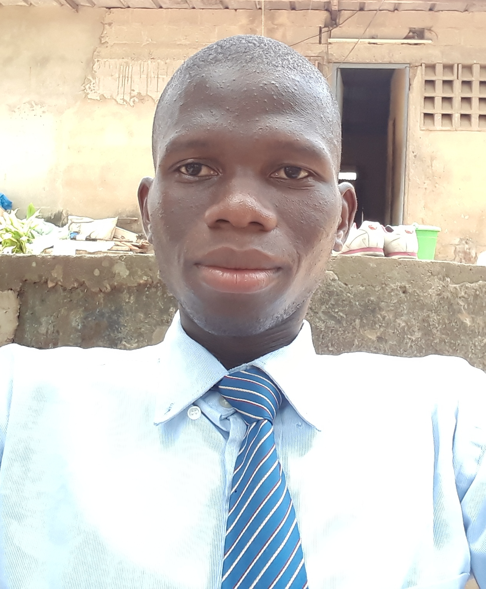

KOUADIO
Konan Franck Hervé
24 ans
Ivoirien
05 85 633 600
kouadiohervefranck@gmail.com
Abidjan-Abobo
COMPETENCES
Infographie
Marketing digital
Reférencement web
Webmaster
INTERET
Formation autodidacte
Lecture
Spectacle
Découverte
REFERENT DIGITAL
En ma qualité de reférent digital, je suis capable de faire des créations
visuelle, les animer. Je suis capable de creér un site web, l'animer et faire le reférencement;
Je peux également gerer les campagnes digitales.
DIPLOMES ET FORMATIONS
- 2021: En cours de formation reférent digital
- 2017-2018: Licence professionnelle en Marketing Communication Publicité
- 2016-2017: BTS en Ressources Humaines et Communication
- 2014-2015: BAC A2 au lycée moderne de Soubré
EXPERIENCES PROFESSIONNELLES
- 2018: Stage en journalisme et animation radio à la Radio la Voix de la Nawa à Soubré
- 2019: Animateur de marque à Africa West Industries (AWI) à Abobo
- 2020: Promoteur auprès de l'agence Canaan à Angré 8ème tranche
- 2021: Gestionnaire de projet agricole
PERSONALITE
Créative
Réactive
Rigoureuse
Cooérative
Aisance relationnelle